Hartree-Fock theory as it stands is too time consuming for use in large systems such as point defect complexes in Si.
However it can be used in a parameterised form, and this is the basis of many of the semi-empirical codes such as CNDO and MINDO/3. CNDO and related schemes have been used to great effect by Snyder, Corbett and Deák [28] in their work on the behaviour of interstitial oxygen and thermal donors in silicon. By parameterising the overlap matrix to varying degrees, the calculation speed is vastly increased, allowing 130 atom clusters to be routinely optimised on desktop PCs. I will describe in the following section the basis for early parameterisations of CNDO [32]. A lot of information is removed from the calculation when the overlap between orbitals of different atoms is neglected, which in theory could destroy any chance of realistic simulations. However much of the information removed in the simplifications is brought back into the calculations through the parameterisation of experimental data.
The first step in such methods is to expand the one-electron wavefunctions as a set of atomic orbitals; this is known as the tight binding method, or sometimes LCAO (Linear Combination of Atomic Orbitals),
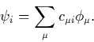
This reduces the problem to the determination of the linear expansion coefficients, 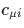. Different ranges of atomic orbitals can be used depending on the accuracy required; commonly these are either Minimal (all atomic orbitals up to and including the valence shell), Extended (Minimal with a few more), or Valence (only the orbitals in the valence shell of the atom). Despite being the least accurate, the valence basis set is commonly employed for very large systems due to its speed and is used in CNDO.
Since 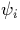 are orthogonal, it follows that
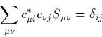
where 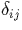 is the Kronecker delta and  is the overlap between atomic orbitals,
is the overlap between atomic orbitals,
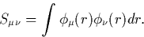
This means that the Hartree Fock equations can be rewritten as the Roothaan equations, a set of algebraic expressions
| 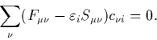 | (15) |
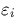 is the one-electron energy. 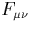 is the `Fock matrix' and consists of two sets of matrix elements, the core Hamiltonian elements, 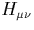 and those due to interactions between the different orbitals. These are expressed in terms of a `density matrix', 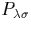 which is a matrix of the orbital coefficients 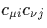, coupled with various two-electron integrals over atomic orbitals, 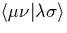,
| 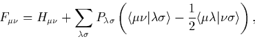 | (16) |
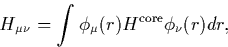
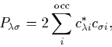
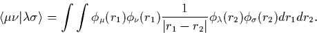
Now it is possible to make several selective approximations. The first of these is the zero differential overlap approximation (ZDOA). This says that since the atomic orbitals on a given atom are roughly orthogonal, the overlap between these can be considered zero; in terms of the two-electron integrals, most of these are therefore set to zero,
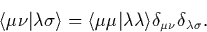
The corresponding overlap integrals, 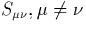 are also ignored for the same reason. This approximation removes all the three and four centre integrals, vastly simplifying the calculation. The chemical bonding is however reliant on the overlap character, and this is maintained through , the core integrals. These are parameterised to experimental results, compensating for the ZDOA to some extent. For CNDO,
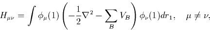
where -VB is the potential due to the nucleus and core electrons of atom B.
Applying the ZDOA simplifies the Roothaan equations to
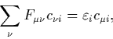
with
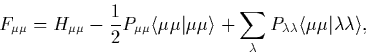
and for 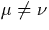,
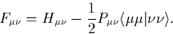
However in the form described here, the ZDOA leads to inconsistencies. The orbitals on a given atom can be transformed into a different orbital set which would breach the zero differential overlap approximation, i.e.
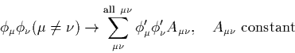
This means that the results would be basis dependent, and to avoid this, further constraints need to be applied. The simplest scheme to achieve this is CNDO.